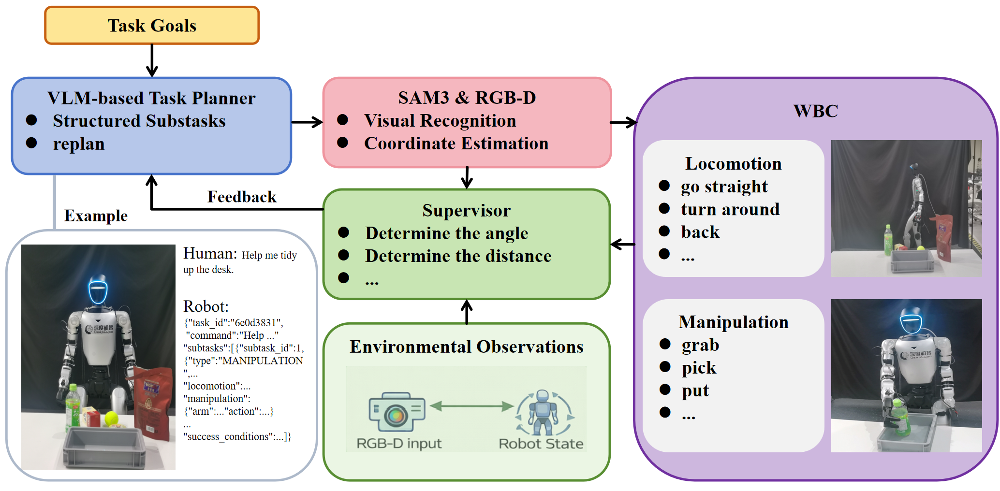

Cybo-Waiter
把子任务的完成条件写成几何谓词，连续若干帧成立才判完成。
Cybo-Waiter: A Physical Agentic Framework for Humanoid Whole-Body Locomotion–Manipulation
Being-0 对齐五项任务各 10 次，抓瓶 8/10 升到 10/10、放篮 6/10 升到 9/10；长程三项去掉监督者各降两次。
01这篇要解决什么？
如果你已经写过带验收环节的 Agent，这篇值得看的是验收条件从哪里来。它不让模型事后看一眼图说做成了，而是在规划的那一刻就把每个子任务的前置与成功条件写成带稳定帧数的谓词，判定交给分割与深度算出的几何量。
02先看一个场景
人形站在杂乱的办公桌前收拾东西，指令是把杯子放进收纳盒。松手那一瞬深度图恰好抖了一帧，杯子的掩码丢了。若按动作原语返回正常就算做完推进，机器人会空着手走向下一个物体，杯子还躺在桌上。
03方法怎样运转？

- 01
指令先编译成带谓词的 JSON 计划
VLM 规划器把指令编译成一串定长字段的子任务：类型、目标的符号句柄与语言描述、目标区域、manipulation 与 locomotion 两个块、前置与成功条件、超时秒数与最大重试次数。条件写成谓词断言，各带一个 stable_frames；论文没有给出这个 VLM 的型号。
- 02
落地的不只是目标物，谓词提到的都要落
当前子任务涉及的实体不止目标：目标区域、target.relations 提到的物体，以及前置与成功条件参数里出现的物体，例如 SUPPORTED_BY 的支撑面，都要落。每个实体按语言描述去 SAM3 取候选掩码，掩码内的深度像素反投影成点云，算出质心、尺寸与一个合成置信度。
- 03
监督者按稳定帧判定，并给出条件级诊断
每条谓词先折成一个标量几何度量，与目标值比出瞬时真假，再要求连续 n 帧都成立才算满足。前置全满足记就绪，成功条件全满足记完成，前置不成立记 blocked，超时或安全谓词被违反记 failed。另外，监督者还回一组连续诊断：高度差、相对距离、对齐角与置信度，指出哪一条不满足。
- 04
恢复算子先上，预算用尽才整段重规划
按失败类型选恢复算子：重新观测、用更新后的提示重新落点、换一条原语或放宽容差、对齐误差很小时微调末端位姿，再不行就往剩余计划里插纠正子任务。重试预算由子任务自带的 timeout_sec 与 max_retry 决定，用尽才把失败谓词与诊断交回规划器重规划，已完成的子任务保留。
- 05
执行层：下肢是步态技能库，上肢走 MPC
执行层按子任务类型派活。LOCOMOTION 走步态条件的 RL 策略，按 gait_id 输出下肢指令跟踪底盘速度与偏航率，12 段片段映射成 7 条原语。MANIPULATION 按计划指定的手与原语走上半身 MPC 生成末端轨迹，下半身独立维持平衡，两者由轻量协调器切换。
plan = VLM(instruction, obs) # typed JSON：每个子任务带谓词与 stable_frames
for tau in plan.subtasks:
for attempt in range(tau.max_retry + 1):
W = ground(SAM3(tau.entities), depth) # 掩码反投影成质心、尺寸、置信度
if not all(sat(p, W) for p in tau.preconditions):
coordinator.locomote(tau.locomotion); continue # blocked：先走位再来
execute(tau.manipulation) # 上半身 MPC，下半身独立保平衡
while t < tau.timeout_sec: # 终止条件：成功条件连续 n 帧成立
W = ground(SAM3(tau.entities), depth)
if all(sat(g, W) for g in tau.success_conditions): done = True; break
if done: break
apply(tau.failure_handlers) # 重新观测 / 重新落点 / 换原语 / 微调位姿
if not done:
plan = VLM.replan(tau, status, failing_predicates, diagnostics)方法与结果的原文定位见本页引用。
04跟着这个场景走一遍
教学推演：回到上面的场景。第一步，指令先被编译成 typed JSON：一个 MANIPULATION 子任务，target 的 phrase 写 cup、destination 写 container，manipulation 块指定右手、PLACE 原语、启用上半身 MPC，前置条件是 VISIBLE 连续 3 帧成立，成功条件是 SUPPORTED_BY 连续 10 帧成立，超时 30 秒、最多重试 2 次，论文附的计划片段里就是这么写的。第二步，落地的不只是杯子：谓词参数里出现的支撑面、目标区域与关系引用一起送进 SAM3 取候选掩码，再用深度反投影成点云，算出质心、尺寸与置信度，按语义、关系、几何、时间稳定四项加权选实例。第三步，监督者每帧把 SUPPORTED_BY 折成一个标量再二值化，掩码丢的那一帧只让它变成 0，连乘之后成功条件不满足，状态仍是执行中，朴素做法在这里就提前推进了，稳定帧要求挡住的正是这一下。第四步，如果一直超时，诊断向量会指出是高度差还是对齐角不对：小误差走末端微调，估计不可靠走重新观测与重新落点，都不行才在重试预算用尽后交回规划器重规划。第五步，执行侧始终是分开的：走位时调 7 条运动原语之一，操作时上半身解 MPC、下半身独立维持支撑，协调器按子任务类型与监督者反馈切换。要说清没做到的：这套判据全部建在几何上，有没有握牢、有没有滑脱只能靠掩码与深度间接推断；站不站得住不在任何一条谓词里；论文也没有给出 VLM 的型号、恢复算子被触发的频次，以及摔倒这类失败的单独统计。
05实验到底表现怎样？
真机平台是 Unitree G1 配 Dex3-1 灵巧手与头部 RGB-D，感知与决策跑在一台 RTX 5080 工作站，低层控制器跑在机身计算机，场景是杂乱的室内办公环境。表 I 按 Being-0 的任务定义与判据执行，每项 10 次；表 II 是三项自定义长程任务，同样每项 10 次。
作者报告的实验结果 · v1
| 表 I · 任务（各 10 次成功计数） | Being-0 | Cybo-Waiter |
|---|---|---|
| Fetch-bottle | 9/10 | 9/10 |
| Grasp-bottle | 8/10 | 10/10 |
| Place-basket | 6/10 | 9/10 |
| Place-coffee | 6/10 | 8/10 |
原始证据：方法总览：§III ↗ · 执行层与步态技能库：§III-E ↗ · Being-0 对齐任务：表 I ↗ · 长程任务与监督者消融：表 II ↗
两张表都是 10 次的成功计数，样本小到一次成败就改 10 个百分点。表 I 里取瓶与送篮两项与 Being-0 持平，收益集中在放篮、放咖啡这类要判断物体是否稳稳落到支撑面上的子任务，与谓词监督的作用方向一致。
06收益来自哪里，又停在哪里？
消融与机制证据
表 II 只拆了监督者一项：关掉之后 Tidy-desk 从 7/10 降到 5/10、Tabletop-sorting 从 8/10 降到 6/10、Bring-me-a-drink 从 9/10 降到 7/10。谓词、稳定帧、多物体落点与恢复算子没有分开消融，因此不知道收益来自哪一件。
结论的适用边界
模型来源要分三块看。感知侧是现成的 SAM3，几何量由标定过的 RGB-D 反投影得到，不训练；规划与语义校验用的 VLM 同样是现成模型，但论文自始至终没有给出型号。真正由作者训练的只有下肢那条步态条件 RL 策略：12 段动作片段在仿真里配域随机化训出来，对外暴露成 7 条运动原语；上半身走 MPC，不是学出来的。因此前提成本主要在工程：谓词库、稳定帧阈值、恢复算子、两台机器的部署，以及每个子任务的 timeout_sec 与 max_retry 怎么填，这些值论文没有给出。评测也要看清楚：两张表都是每项 10 次的成功计数，表 I 按 Being-0 的定义与判据执行，但论文没有说对照那一列是自己复现还是引用。失去平衡与摔倒这类人形特有的失败没有单独统计，成功率之外也没有任务进度指标，因此看不出失败发生在哪一步。
07放回全书的脉络
与 RoboHarness 对照读：那边的交接目标取在支撑域与可达集的交集里，这边的前置谓词只管几何成不成立，站不站得住不在判据内。
08把阅读变成一个小研究
写一个两物体的假场景，给成功谓词设 1 帧与 10 帧两种稳定长度，注入几帧检测抖动，分别统计误判与多等的时间。
先自己回答：这项实验怎样才有解释力？
稳定帧数换的是误接受率与延迟，不存在免费的一档。同时记录提前推进的次数与每个子任务的平均耗时，才看得出这个阈值该怎么定。
- 用自己的话说出这篇改变了哪个模块。
- 画出它的输入、输出和一次失败如何被处理。
- 复述一个结果，同时说清基线、指标与实验条件。这一问不给答案，材料在第 05 节。
先自己答，再看前两问的参考答案
这篇改了哪个模块改动落在验收这一层，而不是机器人会做什么。计划不再只是一串动作名，每个子任务自带前置条件与成功条件，写成参数化谓词并各带一个必须连续成立的帧数；判定依据是 SAM3 分割后再由 RGB-D 抬到三维的质心、尺寸、置信度与成对关系。它没有改动作本身：下肢那条步态条件 RL 策略与上半身 MPC 都在原地，运动侧固定成 7 条原语。VLM 语义校验只在几何证据缺失或矛盾时被叫起来，且不作为主判据。
输入、输出与一次失败如何被处理输入是一条自然语言指令与头部 RGB-D 观测，加上机器人本体状态；规划器看到的是指令与观测，监督者看到的是当前子任务、目标句柄与那份以物体为中心的工作空间状态。输出分两级：规划器输出 typed JSON 的子任务序列，执行层按类型把它派成下肢的 gait_id 与底盘速度、偏航率指令，或上半身 MPC 的末端轨迹，几何目标由句柄提供，走位与操作之间由一个轻量协调器按类型与监督者反馈切换。终止条件是成功条件的全部谓词连续 stable_frames 帧成立。失败通路是这篇的主线：监督者每帧算一遍谓词的标量度量，前置不成立记 blocked 并报出是哪几条，超时未完成或安全谓词被违反记 failed，几何估计不可靠时抬起不确定标志；随后按失败类型选恢复算子，重新观测、重新落点、换原语或收紧容差、插入纠正子任务；重试预算由 max_retry 定，用尽才把这条反馈记录交回规划器重规划，已完成的子任务保留。需要留住的是判定链条全在几何上，掩码丢了这条链就断了。
把子任务的完成条件写成几何谓词，连续若干帧成立才判完成。
↗带着位置回到原文
首发日期用于时间排序；以下方法与结果对应 v1。数据为论文作者报告，本讲义没有独立复现实验。
QA就这一页提问或讨论
对某个数字、某条边界或某个推演有疑问，欢迎直接留言：讨论按页面分开，回复会保留在 XinrunXu/awesome-agentic-robotics-papers 的 Discussions 里，需要一个 GitHub 账号。